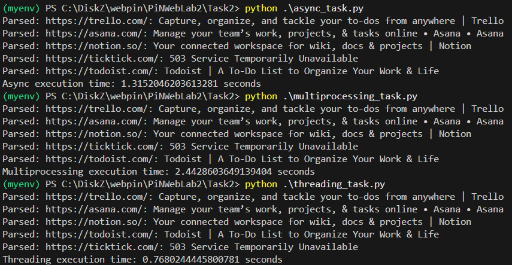

Задача 2. Параллельный парсинг веб-страниц с сохранением в базу данных
Задача: Напишите программу на Python для параллельного парсинга нескольких веб-страниц с сохранением данных в базу данных с использованием подходов threading, multiprocessing и async. Каждая программа должна парсить информацию с нескольких веб-сайтов, сохранять их в базу данных.
models
from sqlmodel import Field, SQLModel
class WebPage(SQLModel, table=True):
id: int | None = Field(default=None, primary_key=True)
url: str
title: str
parse and save for async
from bs4 import BeautifulSoup
from connection_async import SessionLocal_async
from models import WebPage
async def parse_and_save_async(url, session):
try:
async with session.get(url) as response:
text = await response.text()
soup = BeautifulSoup(text, 'html.parser')
title = soup.title.string if soup.title else 'No title'
async with SessionLocal_async() as db_session:
page = WebPage(url=url, title=title)
db_session.add(page)
await db_session.commit()
print(f"Parsed: {url}: {title}")
except Exception as e:
print(f"Error parsing {url}: {e}")
asyncio
import aiohttp
import asyncio
import time
from urls import urls
from parse_and_save_async import parse_and_save_async
from connection_async import init_db_async
async def main():
await init_db_async()
async with aiohttp.ClientSession() as session:
tasks = [parse_and_save_async(url, session) for url in urls]
await asyncio.gather(*tasks)
if __name__ == "__main__":
start_time = time.time()
asyncio.run(main())
end_time = time.time()
print(f"Async execution time: {end_time - start_time} seconds")
parse and save
from bs4 import BeautifulSoup
import requests
from connection import SessionLocal
from models import WebPage
def parse_and_save(url):
try:
response = requests.get(url)
soup = BeautifulSoup(response.text, 'html.parser')
title = soup.title.string if soup.title else 'No title'
with SessionLocal() as session:
page = WebPage(url=url, title=title)
session.add(page)
session.commit()
print(f"Parsed: {url}: {title}")
except Exception as e:
print(f"Error parsing {url}: {e}")
multiprocessing
import multiprocessing
import time
from connection import init_db
from urls import urls
from parse_and_save import parse_and_save
def main():
init_db()
processes = []
start_time = time.time()
for url in urls:
process = multiprocessing.Process(target=parse_and_save, args=(url,))
processes.append(process)
for process in processes:
process.start()
for process in processes:
process.join()
end_time = time.time()
print(f"Multiprocessing execution time: {end_time - start_time} seconds")
if __name__ == "__main__":
main()
threading
import threading
import time
from connection import init_db
from urls import urls
from parse_and_save import parse_and_save
def main():
init_db()
threads = []
start_time = time.time()
for url in urls:
thread = threading.Thread(target=parse_and_save, args=(url,))
threads.append(thread)
for thread in threads:
thread.start()
for thread in threads:
thread.join()
end_time = time.time()
print(f"Threading execution time: {end_time - start_time} seconds")
if __name__ == "__main__":
main()
Результаты
Парсинг одного сайта
Парсинг пяти сайтов

Вывод
Тут уже более интересные результаты: для одного сайта async и threading показали одинаковые результаты, а multiprocessing показал ожидаемо низкий результат, так как никаких интенсивных вычислений в логике программы не было, но для 5 сайтов вышел вперед подход threading, что я объяснить так и не смог, так как я сделал все для того чтобы асинхронность тоже показала хороший результат.
Немного почитав, я узнал, что есть слишком много факторов влияющих на aiohttp и их невозможно все учесть. Где-то говорят, что нестабильно работает, а где-то говорят, что прокси может сильно замедлить, хотя я его и не использовал, но все же, как факт.